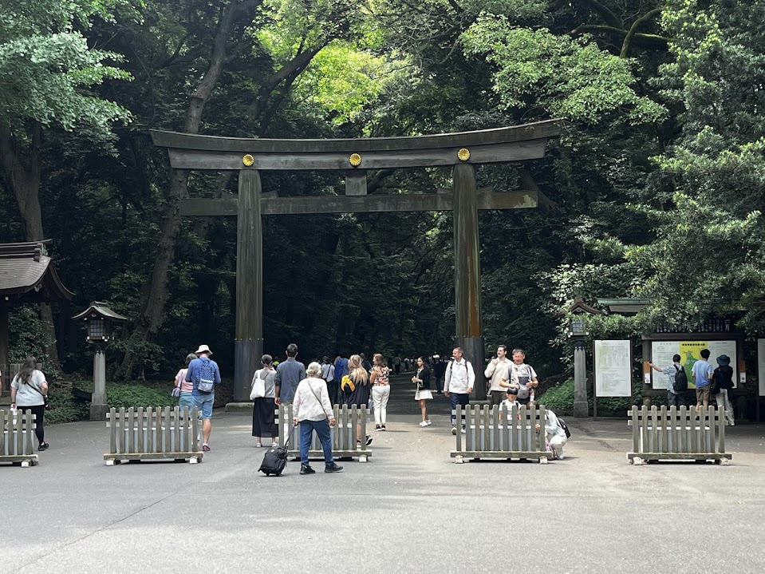
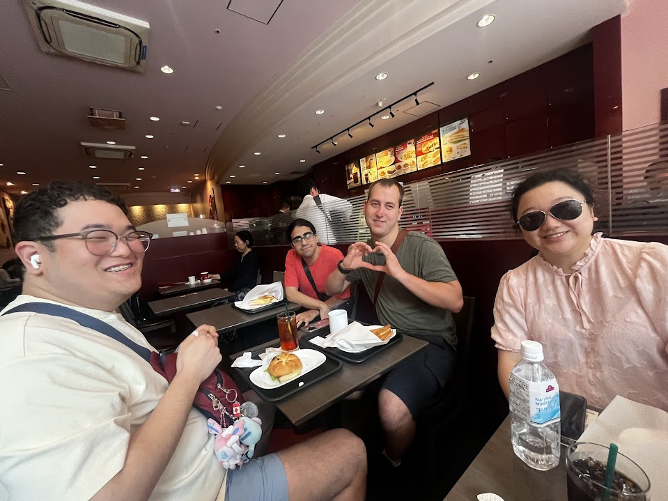
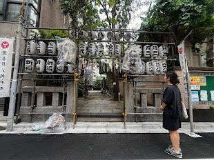
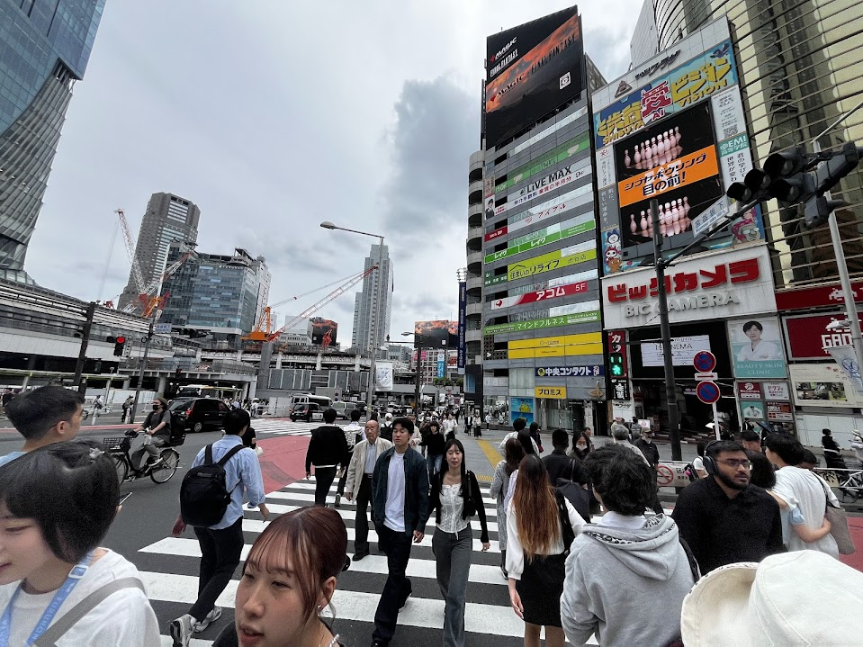
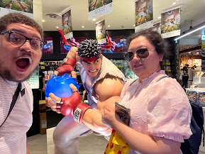
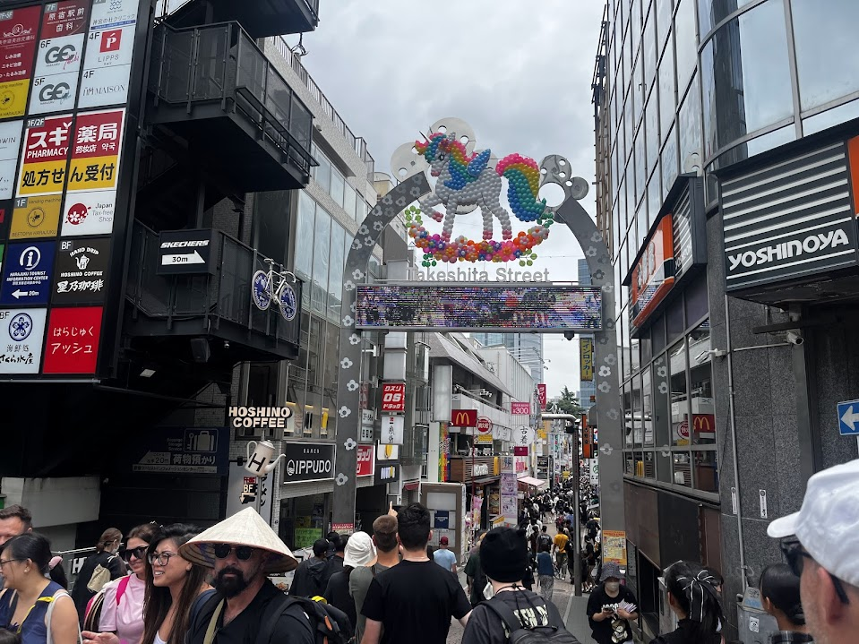
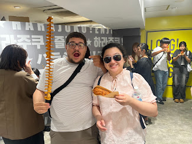
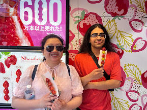
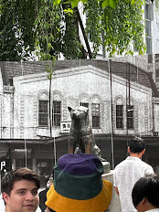
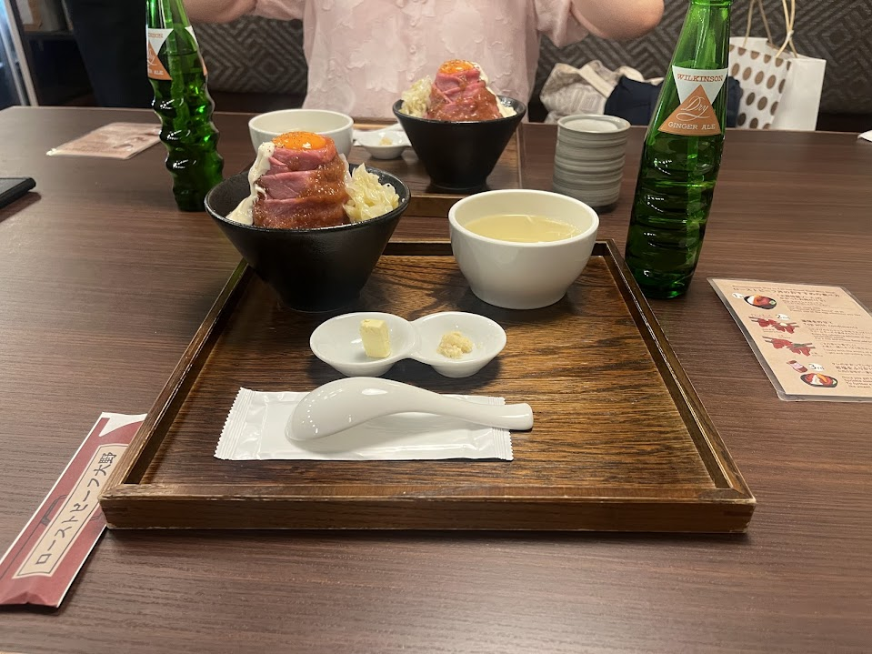

Day 3 – Shibuya, Tokyo
This was the first official day of the study abroad trip, and it was packed with numerous activities, plenty of walking, and visits to several iconic locations. The day began with a trip to the Meiji Jingu Shrine. It was incredibly relaxing to stroll through the surrounding forest and breathe in the fresh, woody-scented air. Surprisingly, it felt quite cool along the path, as the sunlight was blocked by the tall trees that towered over our group, creating a serene and shaded atmosphere.
After a peaceful walk, we arrived at the first shrine, where we took a moment to pray to the gods. We also spent time taking numerous photos and videos of the area, capturing the beauty and calmness of the space. The shrine was filled with a mix of tourists like us and many Japanese visitors who had come either to pray or sightsee. The cultural and historical significance of the shrine was evident everywhere, with informative signs and displays that made it easy to learn about its background and meaning.Following our time at Meiji Shrine, we made our way to the bustling city of Shibuya, eventually splitting into smaller groups around the Jingumae district. The sheer number of people in the streets was overwhelming, it seemed like hundreds were out shopping and enjoying the day. Since we were given about an hour of free time, Max, Kelvin, Anh, and I explored several shops to pick up some necessities and check out anime merchandise. We were also surprised by the variety of food options in the area, and we decided to stop and grab a bite to eat.
Once we had finished eating and shopping, we regrouped and walked over to the famous Hachiko statue near Shibuya Crossing. I was shocked by how many people were gathered around the statue; the crowd was so large that I didn’t want to wait in line for a close-up photo. Similarly, it was surprising to see the number of people dashing into the crosswalk at Shibuya Crossing just to get the perfect picture. Interestingly, I had expected the crossing itself to be larger, but in reality, it wasn’t much bigger than any of the other crosswalks I had seen in Japan.Our final destination for the day was Udagawacho, another district where we visited the sixth floor of the Parco building. This floor quite literally floored me with the amount of nerdy and nostalgic content it housed. There was a Nintendo store, a Pokémon Center, a Jump Shop, and a Capcom store all dedicated to games and media that have been a big part of my life. It was incredible to see how many items and types of merchandise were available to fans.
To wrap up the day, we made one last stop at one of my favorite stores: Tokyu Hands. I was once again amazed by the sheer variety of stationery items they had. Even more surprising were the prices far better than anything I’ve seen in the United States or online. Overall, this first day was an exciting and memorable introduction to Japan, full of cultural experiences, personal highlights, and some very worthwhile shopping.




